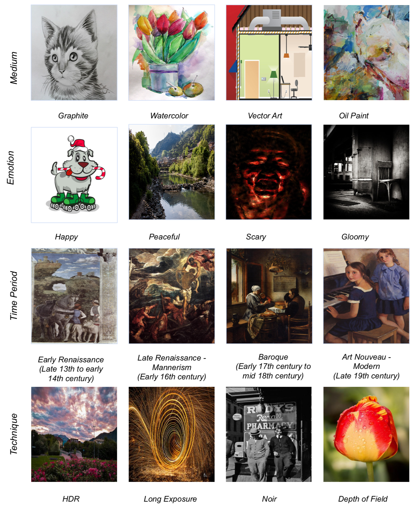
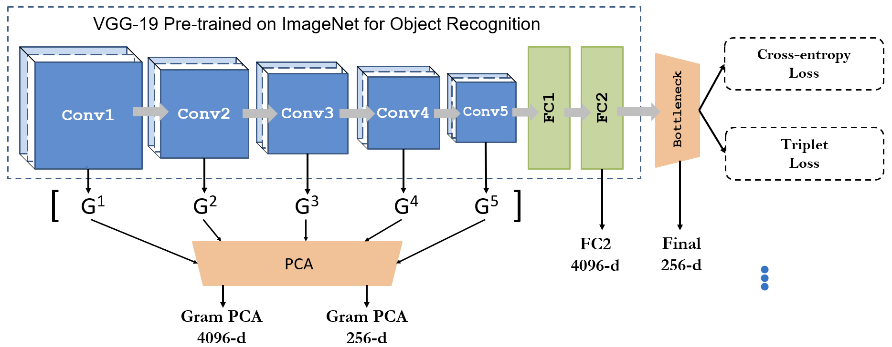
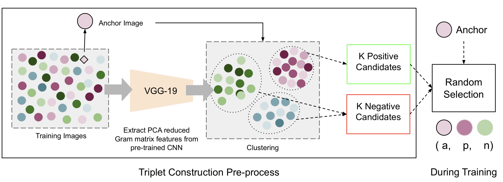
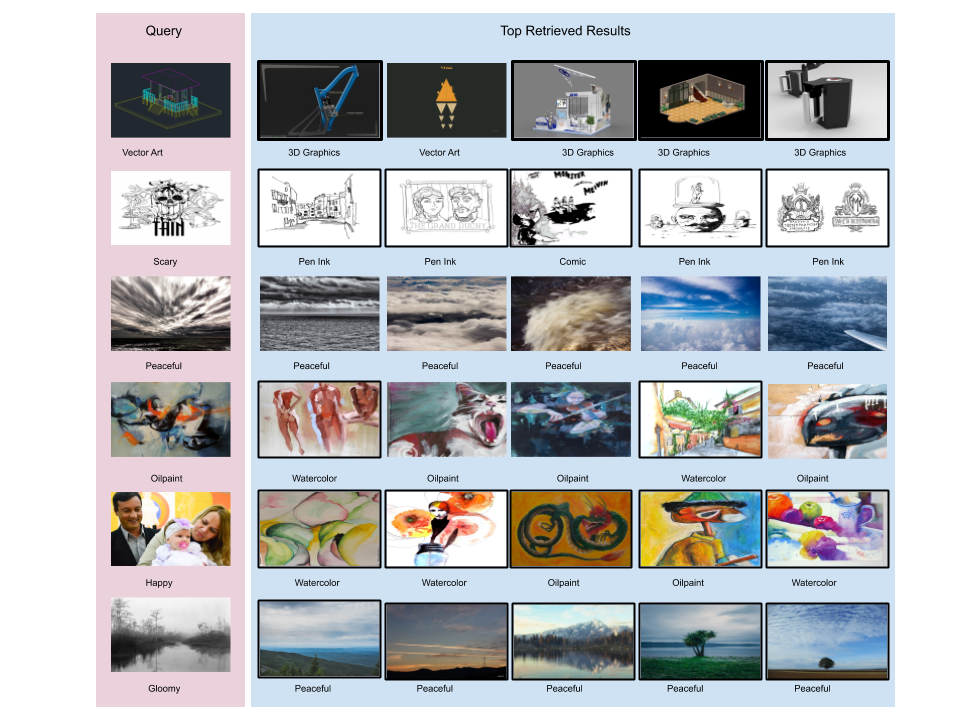
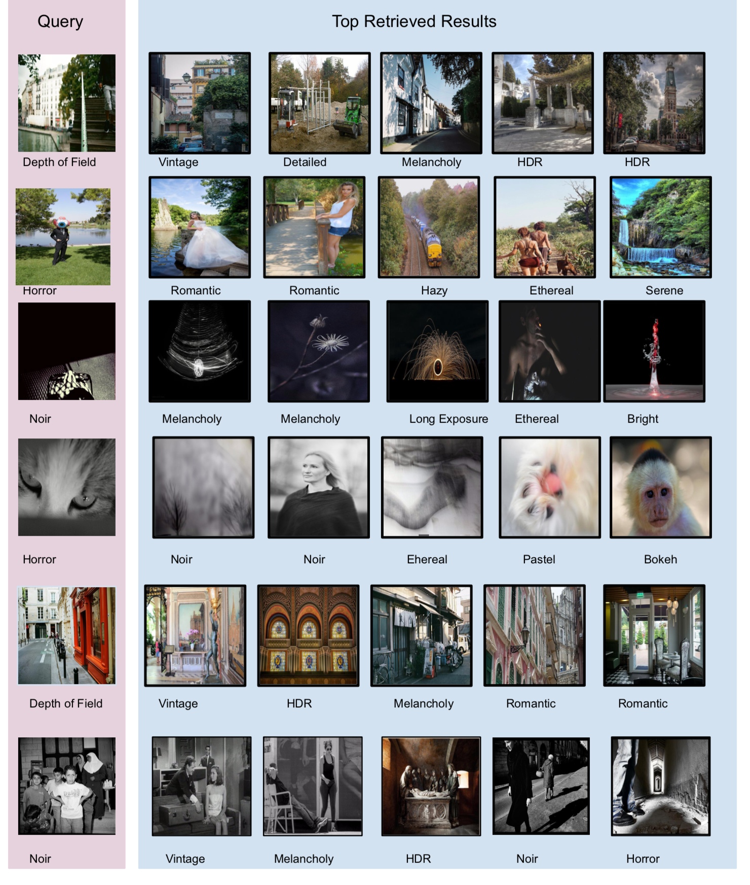
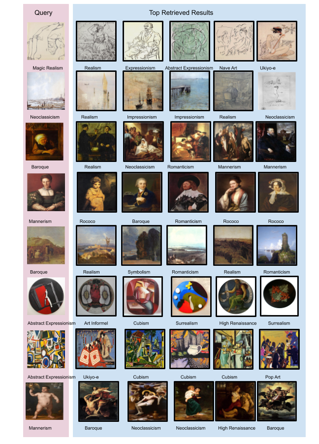
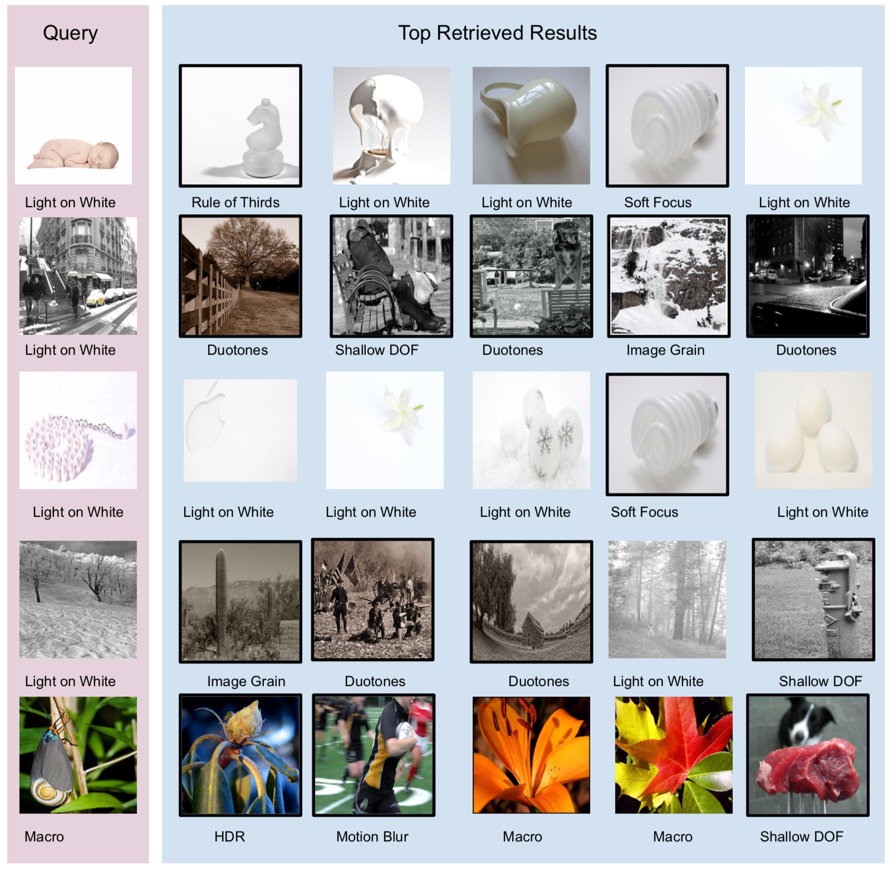
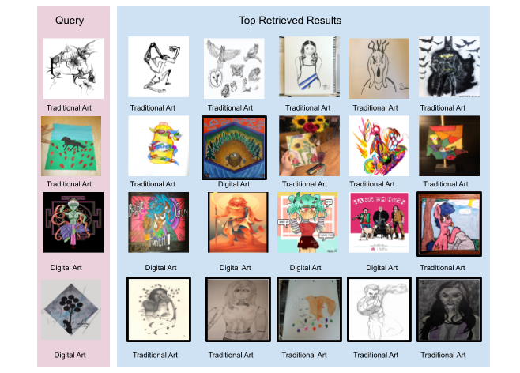
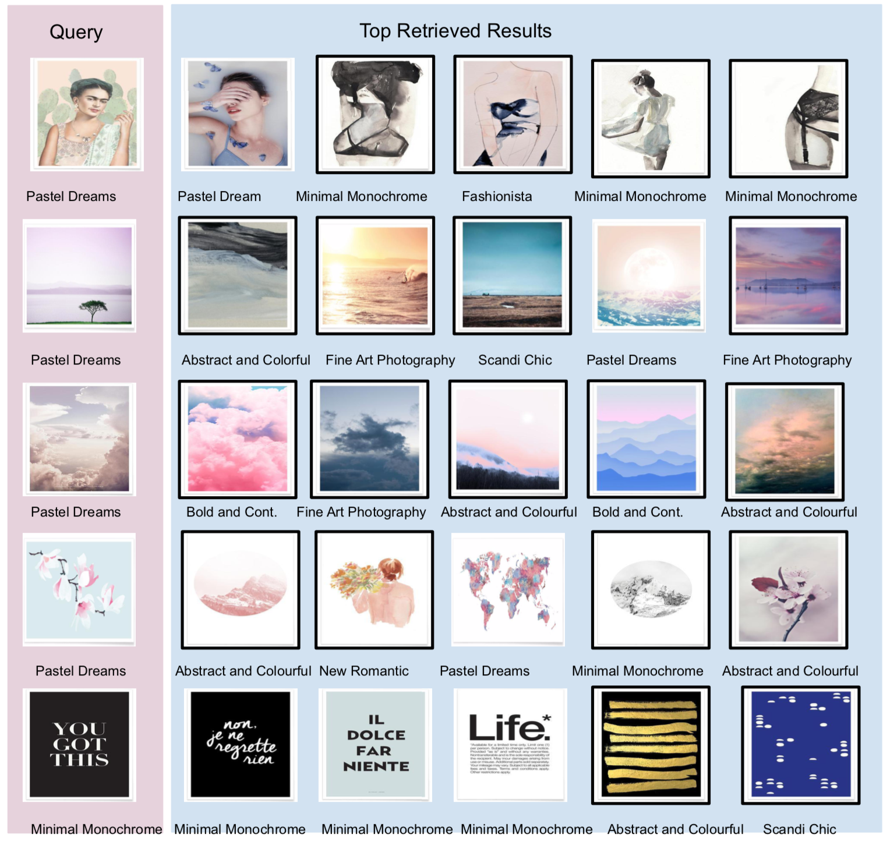

Unsupervised Image Style Embeddings for Retrieval and Recognition Tasks
WACV 2020 (Poster and Oral)

Abstract
We propose an unsupervised protocol for learning a neural embedding of visual style of images. Style similarity is an important measure for many applications such as style transfer, fashion search, art exploration, etc. However, computational modeling of style is a difficult task owing to its vague and subjective nature. Most methods for style based retrieval use supervised training with pre-defined categorization of images according to style. While this paradigm is suitable for applications where style categories are well-defined and curating large datasets according to such a categorization is feasible, in several other cases such a categorization is either ill-defined or does not exist. Our protocol for learning style based representations does not leverage categorical labels but a proxy measure for forming triplets of anchor, similar, and dissimilar images. Using these triplets, we learn a compact style embedding that is useful for style-based search and retrieval. The learned embeddings outperform other unsupervised representations for style-based image retrieval task on six datasets that capture different meanings of style. We also show that by fine-tuning the learned features with dataset-specific style labels, we obtain best results for image style recognition task on five of the six datasets.
Brief Description of the Method and Motivation

Different feature layers of VGG-19 based CNN used for our experiments.

Triplet construction and selection process.
One of the key motivations of this paper is to investigate the quality of understanding of style that can be achieved by an unsupervised approach which does not rely on categorical labels of style. To this effect, we evaluate state-of-the-art representations and their variants for style-based retrieval. We further propose a protocol for unsupervised learning of style representation by leveraging a proxy measure that provides a loose grouping of images. Our proxy measure is based on Gram matrix features popularized by style transfer methods. These features capture the look and feel of an image by measuring the correlation among feature maps produced by different convolutional layers of a CNN and hence are a good choice for discerning different visual styles. We train a Siamese CNN for learning a style embedding that is useful for style based search and retrieval. However, instead of leveraging the style class labels specified for a dataset, we do this in an unsupervised fashion for many datasets. We first divide a dataset into K clusters using Gram matrix features and then use the cluster labels for learning the embedding by (i) directly minimizing a cross-entropy loss for cluster label classification, and (ii) minimizing a triplet loss for maximizing the distances between stylistically (look and feel wise) similar and dissimilar samples. The training with a triplet loss further reinforces the stylistic similarity which is depicted in the figure above. This is of large interest as the unsupervised protocol can be used on unlabelled (no supervision) data for learning stylistically useful representations and help understand a highly subjective concept like style (look and feel) better.
Qualitative Results on Different Datasets
Figures below show results of nearest neighbor retrieval for example queries from each dataset with triplet loss based representation B-Tri (refer paper for more details). Since style labels are often contextual and convey a limited meaning of style, a low precision score does not necessarily imply poor quality of visual similarity. The retrieved results that are highlighted by a black bounding box don't have the same style label as the query, despite obvious visual similarity.
BAM (Behance Artistic Media) Dataset Images

Nearest Neighbour retrieval results for select queries from BAM subset test split. Notice that for rows 1 and 2, the queries and neighbours are very similar looking but the labels do not match. This indicates the lower mAP scores for retrieval using unsupervised methods. 'Oil Paint' and 'Water Colour' are hard to differentiate, similarly 'Gloomy' and 'Peaceful'.
Flickr Dataset Images

Retrieval Results for Query and Top Neighbours Flickr Test Set.
Wikipaintings Dataset Images

Retrieval Results for Query and Top Neighbours Wikipaintings Subset dataset. It is interesting to see the retrieved results and their relevance with respect to the query image. Notice row 7 where, 'Abstract Expressionism' labelled query retrieves 'Ukiyo-e', 'Cubism' and 'Pop Art' paintings.
Ava Style Dataset Images

Retrieval Results for Query and Top Neighbours Ava Style Test Set.
Deviant Art Dataset Images

Retrieval Results for Query and Top Neighbours Deviant Art Test Set.
Wall Art Dataset Images

Retrieval Results for Query and Top Neighbours Wall Art Test Set.
Code and Trained Models
Please visit our Github Repo.
Visualizer
A visualizer to explore the learned representations for the different datasets coming here soon!
Datasets
The links to the datasets used and introduced in the paper shall be released after the conference. We appreciate your patience.
Acknowledgement
We thank Kshitij Gupta, Subramanyam Makkam and Mohsin Mustafa for their help in the project and building the visualizer tool. We are also grateful to Parikshit Sakurikar, Pritish Mohapatra, Saurabh Saini and Aniket for the discussions and insight provided during the course of the entire project work.